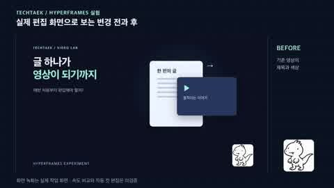
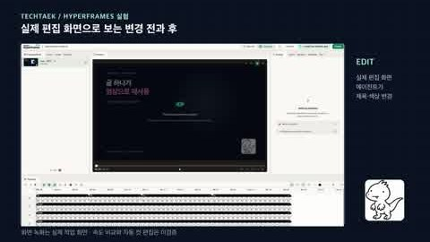
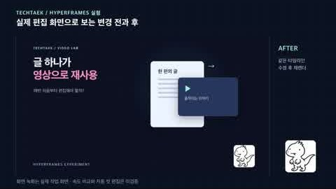

영상 편집을
한 번에 맡기지 말자
HyperFrames로 재작업을 줄이는 핵심은 화려한 프롬프트가 아니라, 싼 검수부터 비싼 렌더까지 순서를 나누는 것.
 완성본 뒤엎기는 이제 그만…
완성본 뒤엎기는 이제 그만…
실제 화면 녹화로 본 변경 전과 후
에이전트가 HyperFrames 편집 화면에서 제목과 글자색을 바꾸고 다시 렌더했다. 마우스 조작이 아니라 편집 기능을 호출한 기록이다.



checkrender이 숫자를 어디까지 믿어도 되나 (한계)
- 10:31:55–10:35:55 기록. 기존 설치와 기존 소스를 재사용했고, 설치 시간·이후 HTML·원고 수정·독립 검수는 4분에 없다.
- 제목·색상 두 가지만 바꿨다. 촬영본 자동 컷, 자막, 음악 믹싱, 다른 편집기와의 속도 비교는 하지 않았다.
- 자동 검사 오류·경고 0, 대비 25/25 통과. 전체 디코딩과 1초 간격 프레임은 확인했지만 실시간 재생과 귀로 듣는 검수는 못 했다.
- 한국어 TTS, 배경음악 없음. 마지막 약 1초는 다음 장면으로 넘어가 비교가 흐려진다.
먼저 어느 길인지부터
이미 찍은 영상과 새로 만드는 영상은 출발점이 다르다. 한 지시문에 섞으면 편집자도 AI도 야근 예약.
- 받아쓰기·타임스탬프 검수
- 러프 컷
- 말 잘림 듣기
- 자막·B롤
- 최종 출력
- 브랜드 명세
- 4구간 스토리보드
- 정지 화면 검수
- 모션
- 검사·출력
사람이 확인하는 체크포인트. 고치는 값이 가장 쌀 때 멈춘다.
벨로키의 5단계
위에서 고칠수록 싸고, 아래로 내려갈수록 비싸다.
- 01
입력부터 정리 수정 비용 낮음
목적, 대상, 길이, 화면비, 파일 위치와 유지해야 할 문장을 적는다. 민감한 영상은 외부 전송 여부도 확인한다.
- 02
말과 시간을 맞춘다
기존 영상은 단어별 타임스탬프를 확인하고 고유명사와 잘린 단어를 고친다. 틀린 받아쓰기로 컷을 만들면 잘못된 지점이 증폭된다.
- 03
러프 컷 또는 스토리보드
무음 0.25초는 빠른 편집의 출발값일 뿐, 의미 있는 쉼은 남긴다. 새 영상은 훅 → 맥락 → 결과 → 브랜드, 1장면 1메시지.
- 04
저렴하게 먼저 확인
기존 영상은 컷 경계를 들어보고, 새 영상은 대표 정지 화면을 본다. 틀린 메시지와 브랜드 색은 여기서 고친다.
- 05
자동 검사 후 사람 귀와 눈 수정 비용 높음
lint → check → render. 출력 파일을 처음부터 끝까지 보고, 소리만 따로 들어 대사·음악·컷을 확인한다.
복사해서 쓰는 지시문
대괄호만 바꿔 넣으면 된다. 둘 다 “확인 전 최종 렌더 금지”가 들어 있다.
기존 영상 러프 컷
첨부한 [파일]로 [대상]을 위한 [길이] 영상을 만들어줘. 먼저 단어별 받아쓰기와 컷 후보를 보여줘. 필러, 반복, 재촬영 구간을 제거하되 의미와 강조를 보존해. 무음 0.25초는 시작 기준이며 자연스러운 쉼은 남겨. 확신이 낮은 구간은 표시하고 컷 경계를 검수할 수 있게 해줘. 원본을 보존하고 내 확인 전 최종 렌더는 하지 마.
새 영상 기획
[주제]를 [대상]에게 설명하는 [길이·화면비] 영상을 기획해줘. 훅·맥락·결과·브랜드 4구간으로 장면별 메시지, 화면, 자막, 시간, 필요한 자료를 표로 제안해. 지정한 브랜드 색상 [HEX], 폰트 [이름], 로고 [경로], 금지 요소 [목록]를 사용해. 먼저 스토리보드와 정지 화면만 보여주고 확인 후 모션을 만들어줘.
숫자는 계약, 결과는 검수
음악 10%는 예시 설정이지 청감상 음량 보장이 아니다. 플레이어 볼륨 배율인지, 음성 대비 측정 레벨인지 먼저 정하고 완성본을 직접 들어 조절한다. 모델이 실제로 소리를 들을 수 있는지는 환경마다 다르니, 들었다고 가정하지 않는다.